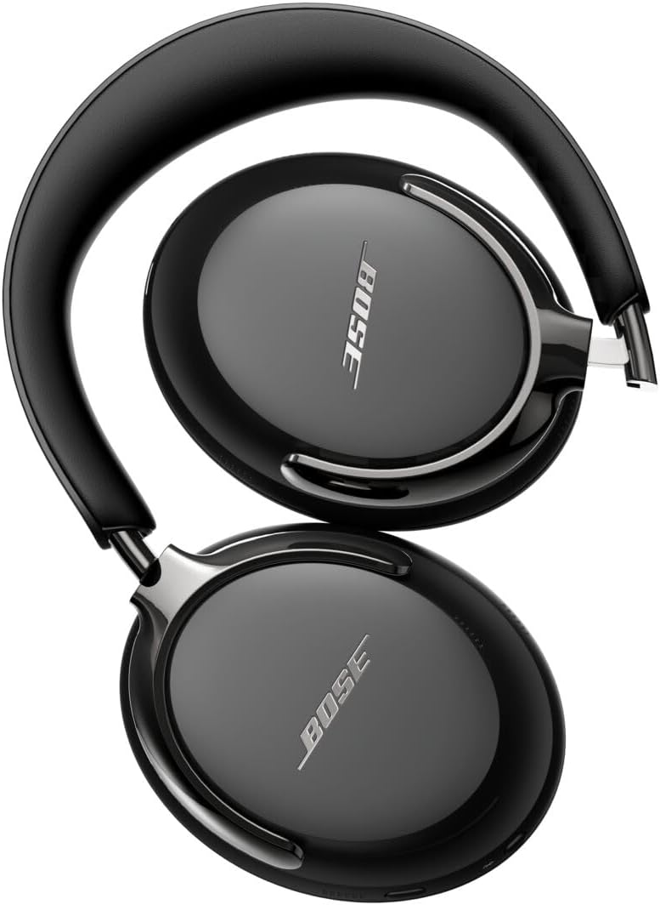

Bose QuietComfort Ultra Review (2026): Comfort & Isolation Refined
TL;DR Verdict
The Bose QuietComfort Ultra redefines what long-term wearing comfort looks like in the high-end audio spacer. Merging an impossibly light caliper clamp force with premium synthetic wrap finishes, the physical engineering is arguably the best in class. Coupling this chassis with cutting-edge proprietary spatial audio processing and Snapdragon Sound, it delivers an immersive, enveloping soundstage that effortlessly blocks out the chaotic external world.

Who is it for?
- Knowledge workers pulling twelve-hour daily shifts
- Frequent flyers valuing compact, foldable engineering
- Listeners demanding aggressive, high-frequency sound dampening
Who should skip?
- Budget-conscious buyers looking for sub-$200 hardware
- Studio monitors requiring absolute latency-free wired playback
- Users wishing to charge their headset while actively listening
Bose built their entire corporate legacy on two foundational pillars: eliminating background noise and providing absolute comfort. The Bose QuietComfort Ultra represents the highest tier of that legacy. In professional and remote workstation environments where deep, uninterrupted work periods are critical, having a headset that feels physically invisible while silencing external chaos is paramount. The Ultra pushes their renowned active noise cancellation (ANC) into a new echelon, targeting not just the low-frequency rumbles of jet engines or HVAC systems, but the sharp, more difficult transient noises like the clack of a mechanical keyboard or the shrill ring of a desk phone. More impressively, they have integrated a highly robust Snapdragon Sound audio framework designed specifically to expand the spatial soundstage for standard stereo tracks.
For a direct comparison with the Sony WH-1000XM5, see → Sony XM5 vs Bose QC Ultra .
Product Overview
The QuietComfort Ultra adopts a sleek, elevated industrial design that immediately distinguishes itself from the older QC45 line. It utilizes a combination of aluminum yokes and ultra-soft synthetic leather that screams luxury. The transition from physical tactile buttons to a touch-sensitive volume strip on the right angled earcup removes mechanical breakage points and streamlines the silhouette. Despite packing an impressive battery cell and advanced computational microphone arrays, the housing remains remarkably light. Beyond the hardware, the Ultra heavily pushes 'Bose Immersive Audio', an acoustic virtualization engine running entirely on the headset's proprietary silicon. It takes standard two-channel stereo mixes and spatializes them, moving the perceived audio source from directly inside your skull to a virtual stage positioned directly in front of you. Unlike competing spatial audio systems that require specific platform support or encoded tracks, Bose handles the math intrinsically on the fly.
Furthermore, the inclusion of Snapdragon Sound means that when paired with a compatible Android handset or modern Windows laptop, users gain access to aptX Adaptive. This versatile codec dynamically adjusts streaming bitrates based on RF interference and content demands, ensuring high-resolution audio delivery in quiet environments, and rock-solid connection stability during congested subway commutes. The CustomTune audio calibration technology plays another critical role here. Every time the headset powers on, a proprietary chime maps the unique acoustic properties of your ear canal. It then instantly recalibrates both the frequency response curve and the inverse phase cancellation waves, promising a bespoke listening and silencing experience tailored exactly for your individual anatomy.
Key Specifications
| Specification | Details |
|---|---|
| Audio Processing | CustomTune Ear Canal Calibration |
| Active Noise Cancellation | Class-Leading Hybrid ANC, Multiple Modes |
| Supported Codecs | aptX Adaptive, AAC, SBC (Snapdragon Sound) |
| Battery Life | 24 Hours (Standard ANC) / 18 Hours (Immersive Audio) |
| Bluetooth Version | Bluetooth 5.3 (Multipoint Support) |
| Weight | 253g (8.9oz) |
| Spatialization | Hardware-Level Bose Immersive Audio (Still/Motion) |
Pros and Cons
The Good
- Literally zero clamping fatigue over 10+ hours
- Highest tier of high-frequency noise cancellation available
- CustomTune calibration optimizes audio specifically for you
- Folding hinges make for excellent portability
The Bad
- High-tier premium price point
- Immersive audio taxes the battery significantly
- Wired connection does not operate passably when battery is dead

Real-World Use Cases
How does the Bose QC Ultra perform against daily rigors? Our testing indicates several primary scenarios where the hardware profoundly excels against strict competitors:
- The Deep-Work Programmer: Coding sessions demand sustained concentration. The combination of lightweight materials and an almost non-existent clamping force means the Ultra practically vanishes once on the head. The heavy reduction of mid-frequency office chatter such as watercooler talk or mechanical keyboards creates an impenetrable silo for focus.
- The Frequent Trans-Atlantic Traveler: The enduring, inward-folding design means the carrying case slides easily into a slim laptop bag or stuffed backpack. On the aircraft, CustomTune maps out the specific drone of the twin-engine resonance, pumping incredibly accurate phase-inverted frequencies to create stunning silence in the cabin. The 24-hour battery easily covers the globe's longest commercial flights without seeking an outlet.
- The Audiophile Commuter: While moving through urban environments, immersive audio shines by pulling podcasts or standard tracks off the eardrums and projecting them outward. Coupled with 'Motion' mode, the sensors track your head orientation, ensuring the virtual speakers remain locked directly in front of your face as you navigate crowded train cars.
Command Your Audible Environment
Experience total acoustic isolation and zero physical fatigue.
Check Current Price on AmazonSound Signature & Testing Notes
The core audio signature of the QuietComfort Ultra leans into a slightly U-shaped, consumer-friendly profile, ensuring that lower frequencies carry a satisfying, warm punch, while treble frequencies remain energetic without becoming strident or fatiguing over extended listening durations. Transients are clean, and the separation between instrumental layers in complex, multi-tracked rock or electronic mixes remains distinct. When activating Immersive Audio, the soundstage drastically artificially widens. This proprietary DSP manipulation brings vocals forward, creating an uncanny mimicry of sitting precisely in the sweet spot of high-fidelity stereo loudspeakers. Unlike standard EQ tweaks, the Immersive Audio process avoids muddying the lower midrange, retaining absolute tightness on bass kicks and tom rolls. Furthermore, utilizing aptX Adaptive ensures that high-resolution tidal masters retain their dynamic range, delivering subtle breath intakes on acoustic performances reliably and clearly.
Comfort & Build
Bose achieved an industrial engineering marvel concerning weight distribution. By leveraging custom-forged aluminum yokes wrapping into ultra-plush, highly breathable synthetic leather ear cups, they've distributed the 253g weight perfectly evenly across the crown and jawline. Unlike numerous competing models that utilize stiff foam, the memory foam padding implemented here compresses instantly, ensuring a perfect passive acoustic seal around glasses frames or earrings. The clamp force is strictly calibrated it rests on the ears rather than squeezing the skull. The volume slider mechanism is highly intuitive, providing delicate haptic feedback loops that confirm tactile adjustments securely without requiring the user to mash a physical button forcefully against their head.
Battery & Charging Expectations
Power management remains highly robust, though heavily dependent on the chosen operational mode. Under standard listening conditions with maximum Active Noise Cancellation engaged, the internal lithium cell consistently yields 24 hours of operation a full workday, commute, and evening session effortlessly handled. It must be noted, however, the computationally heavy Immersive Audio processing taxes the processor heavily, dropping the maximum continuous runtime closer to 18 hours. While still substantial, it is an important consideration for cross-country transits. Fast-charging via the USB-C port returns a staggering 2.5 hours of emergency playback capacity from a brief 15-minute connection. One distinct operational quirk to be aware of: the DSP disables completely if the battery drains to zero; the included 2.5mm analog wire will simply not pass audio to the drivers passively without battery power.
Final Verdict
The Bose QuietComfort Ultra confidently claims the throne for the most comfortable active noise-canceling headphones available today. The introduction of immersive spatial audio breathes fresh air into the stereo paradigm, and the incorporation of CustomTune calibration guarantees that necessitates hours of absolute, fatigue-free isolation, the Ultra is an unparalleled investment in professional productivity. However, if the Bose premium price is a bit high for your budget, the Sony WH-1000XM5 remains the gold standard for value and call quality, often retailing for significantly less.
Frequently Asked Questions
Does the immersive audio feature drain the battery significantly?
Yes, utilizing the Bose Immersive Audio feature reduces the maximum playback battery life from 24 hours down to approximately 18 hours per charge cycle due to the intense DSP workload.
Can these fold up for travel?
Yes, unlike several competitors in this price bracket, the Bose QuietComfort Ultra retains the classic inward-folding hinge design, making them exceptionally compact for stowing in bags or briefcases.
How does aptX Adaptive enhance the listening experience over AAC?
For compatible Android and Windows devices, Snapdragon Sound with aptX Adaptive allows variable bitrate scaling, minimizing latency for video playback while maximizing audio resolution dynamically as bandwidth allows.
Are the ear pads replaceable?
Yes, the plush synthetic leather ear cushions snap on and off securely. User-replaceable parts significantly extend the overall lifespan of the premium hardware over multiple years of daily usage.